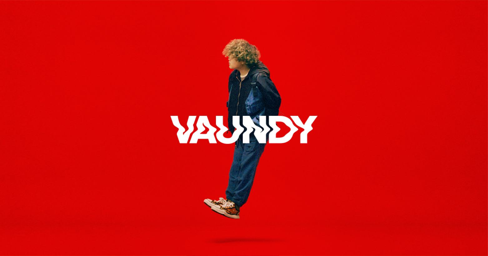

Vaundy is a Japanese singer, songwriter, and producer. A
“self-produced” artist, he handles every component of the music
production process, including lyrics, composition, and arrangement—as
well as artwork design, music video production, and more. The
multi-talented artist is commonly attributed to the rise of the digital streaming era
The name Vaundy originates from a nickname he was given after a funny
incident in middle school. In a
2020 interview
, he shared that during his school’s routine health examination, he
accidentally bumped into someone and rebounded off the wall like a
ball. People started calling him “Bound Ball,” or a “bounce ball” in
English. This was shortened to “Baundy” (Japanese version of
“Bouncey”)
Later, he changed it to “Vaundy” for his artist name, switching the ‘B’ to ‘V’ for a more impactful touch. Despite the alteration, the pronunciation of his name in Japanese remains the same.
Later, he changed it to “Vaundy” for his artist name, switching the ‘B’ to ‘V’ for a more impactful touch. Despite the alteration, the pronunciation of his name in Japanese remains the same.
Vaundy’s music blends various genres, including pop, rock, R&B,
hip-hop, synth-pop, and city pop. Vaundy began making music in his
third year of middle school, using the digital production software
Cubase. During high school, he also became active in the Vocaloid
community as an “utaite,” (歌い手), a Japanese term for people who
cover existing Vocaloid and J-pop songs. These covers are shared
online through the platform
Niconico
.
In the spring of 2019, he began sharing his music on YouTube. He quickly gained popularity within the same year.
In the spring of 2019, he began sharing his music on YouTube. He quickly gained popularity within the same year.
Learn More
I want to create music that will leave a lasting impact on the world.
“
”